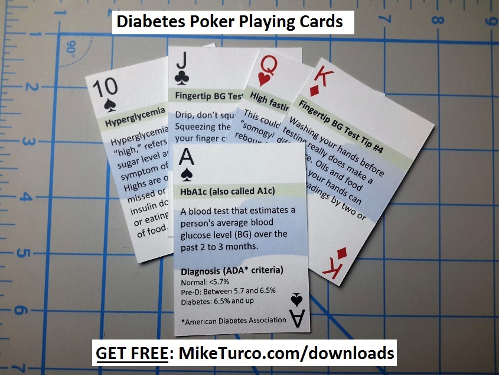
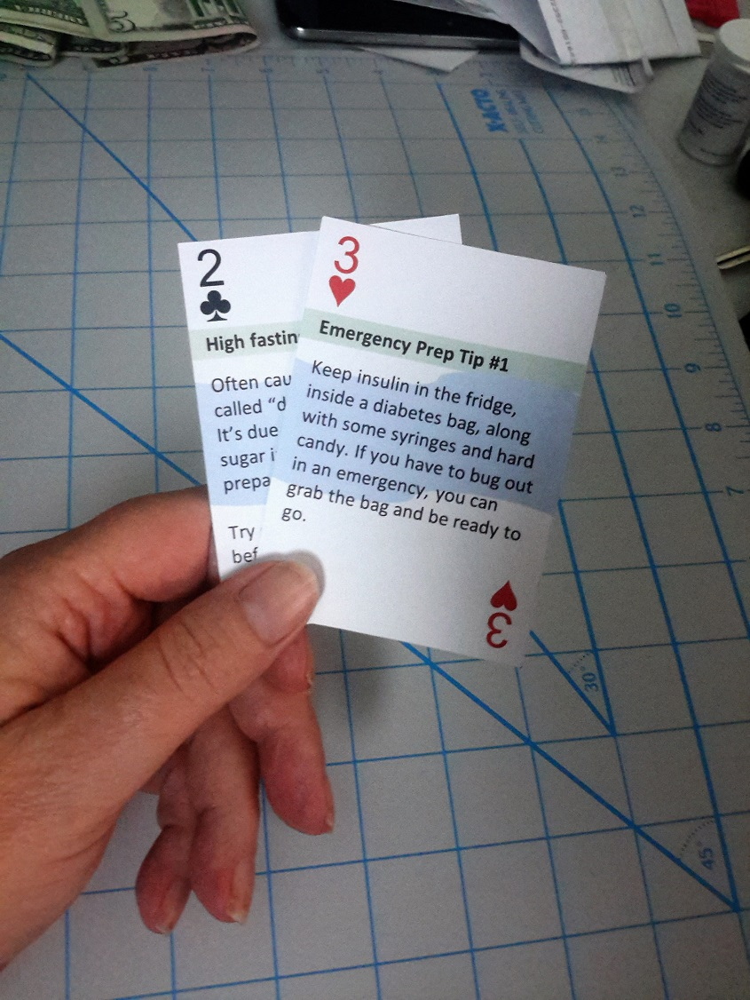
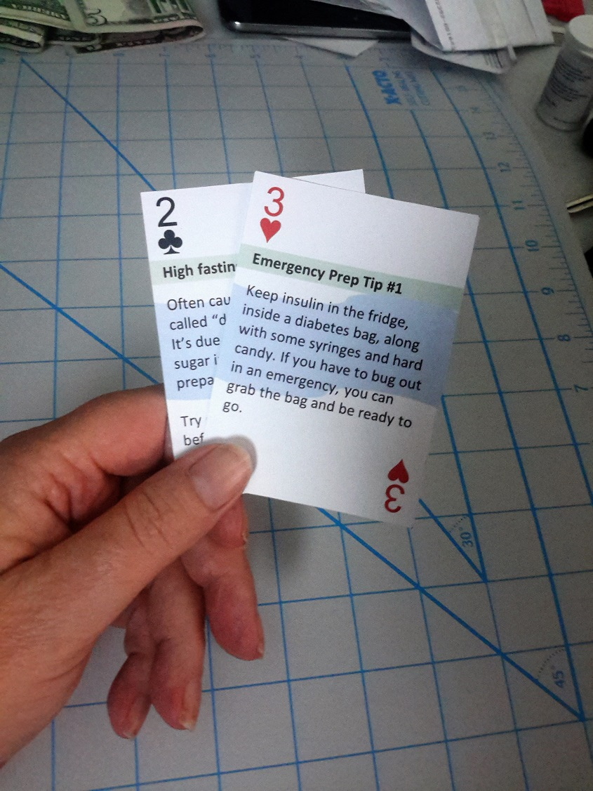

Here are some pictures of the cards

These pictures are from the original prototype. They've changed a little since then. For example, the cards are now more colorful then before. Download Now

The best way to cut the cards out is with a safety razor and a straight edge. As you cut, press hard enough to cut all the way through the first time.

Download Now
These pictures are from the original prototype. They've changed a little since then. For example, the cards are now more colorful then before. Download Now

The best way to cut the cards out is with a safety razor and a straight edge. As you cut, press hard enough to cut all the way through the first time.
Download Now